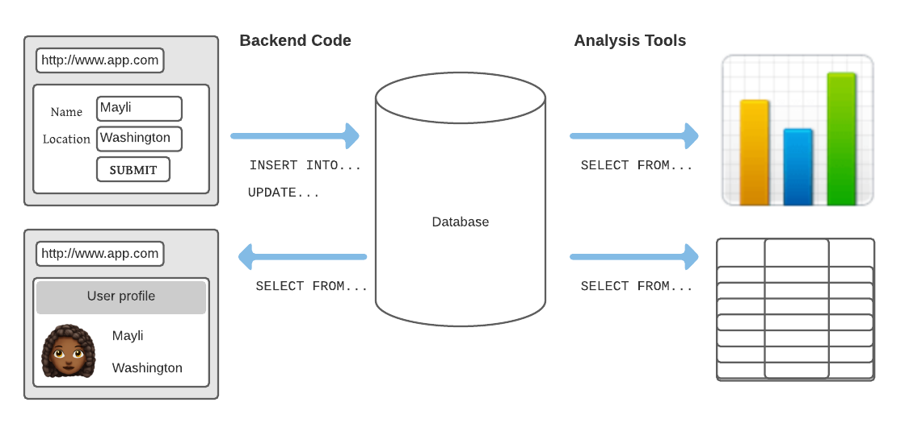
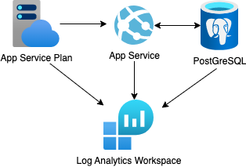

Python Web Apps
with Databases
- Press O or Escape for overview mode.
- Visit this link for a nice printable version
- Press the copy icon on the upper right of code blocks to copy the code
Welcome!
Classroom "rules":
- I am here for you!
- Every question is important
- Help each other
Introductions
Tell us about yourself:
- Name
- Pronouns
- Location
- Programming/Web experience
- What interests you about Python Web Apps?
- Favorite kind of pet/animal?
Today's topics

- Python web apps with databases
- Flask
- Django
- Deploying web apps and databases
Prerequisites
Online development: Github account
Local development:
Local development (option 2):
- Code editor
- Python 3
- PostgreSQL
Review: Python Web Apps
A web app with a Python backend must handle requests to different URLs and return different responses.
An example Flask app:
from flask import Flask
app = Flask(__name__)
@app.route("/hello")
def index():
return render_template("hello.html",
name=request.args.get("name"))
Routes may return different responses based off query parameters, path parameters, or headers. Routes can use templates to generate HTML.
Adding databases
Webapps with Databases
Web apps store data in databases that needs to be shared across multiple users/computers.
Intro to databases
A database contains tables.
Each table has columns and rows.
Example table called organizers:
| id | name | title |
|---|---|---|
| 1 | Katie Brydon | GDI Community Director |
| 2 | Katie Franco | GDI Executive Director |
| 3 | Jeseekia Vaughn | Subject Matter Expert |
| 4 | Alex Vaughn | Coordinator |
Accessing DBs from Web Apps: SQL
Web apps need to be able to access and modify data in databases.
One option is to use SQL directly in the web app code.
import sqlite3
conn = sqlite3.connect("my_database.db")
cursor = conn.cursor()
cursor.execute("SELECT name, title FROM organizers")
results = cursor.fetchall()
Risks of using SQL directly
⚠️ Executing raw SQL queries makes your app vulnerable to SQL injection attacks.
What you expect:
user_input = "Bobby"
query = "SELECT name, id FROM users where name = " + user_input
What a hacker could do:
user_input = "Bobby); DROP TABLE students;"
query = "SELECT name, title id users where name = " + user_input
Accessing DBs from Web Apps: ORM
A better approach is to use an ORM (Object-Relational Mapper) to interact with the database.
An ORM represents table rows as Python objects, and provides methods for querying and modifying data.
A SQLAlchemy example:
class Organizer(Base):
__tablename__ = "organizers"
id: Mapped[int] = mapped_column(primary_key=True)
name: Mapped[str]
title: Mapped[str]
query = select(User).where(User.title == "Coordinator")
results = session.execute(query)
Querying with SQLAlchemy 2.0
Get by primary key:
session.get(User, 42)
Get all rows in table:
session.execute(select(User)).scalars().all()
Finding rows by column value:
session.execute(select(User).where(
User.title == "Coordinator")).scalars().all()
Play with queries in:
PostgreSQL SQLAlchemy Playground
Example: Flask + PostgreSQL
github.com/Azure-Samples/azure-flask-postgres-flexible-appservice
- App setup is in __init__.py.
- Routes are in pages.py.
- Models are in models.py and use SQLAlchemy 2.0.
Run database migrations and server:
python3 -m flask --app src.flaskapp db upgrade --directory src/flaskapp/migrations
python3 -m flask --app src.flaskapp seed --filename src/seed_data.json
python3 -m gunicorn 'src.flaskapp:create_app()' --reload
Database migrations
Migrations are a way to keep track of changes to the database schema.
- When you make a change to the database schema, create a migration file.
Using Flask-Migrate:
python3 -m flask --app src.flaskapp db migrate - Run the migration file to update the database.
Using Flask-Migrate:
python3 -m flask --app src.flaskapp db upgrade
Exercise: Flask app
Using this repo:
github.com/Azure-Samples/azure-flask-postgres-flexible-appservice
- Follow the readme steps to get the app running.
- Inspect the local DB tables using SQLTools extension.
- Submit an info request and find new row in SQLTools.
- Change the destinations route to return destinations ordered by name, using order_by.
- Reload and confirm the destinations appear sorted.
🙋🏼♀️🙋🏾♀️🙋🏽♀️ Let us know if you need any help! 🙋🏻♀️🙋🏽♂️🙋🏿♀️
More Flask + DB examples
- github.com/pamelafox/flask-db-quiz-example
- github.com/pamelafox/translation-telephone
- github.com/pamelafox/flask-surveys-container-app
Also check out the Flask tutorial.
Django framework
Django, an external library, is a fairly "opinionated" framework for server-side code. Includes an ORM for database interaction.
Apps written in Django:
- Coursera (originally, now Scala+Play)
- Pinterest (originally, now Flask)
- Eventbrite
Example: Django + PostgreSQL
github.com/Azure-Samples/azure-django-postgres-flexible-appservice
Important server files:
models.py
, urls.py
, views.py
, admin.py
Run DB migrations and server:
python3 src/manage.py migrate
python3 src/manage.py loaddata src/seed_data.json
python3 src/manage.py collectstatic
python3 -m gunicorn project.wsgi:application --reload --pythonpath src
Django admin
Django includes a built-in admin interface for managing data.
- Create a superuser:
python3 src/manage.py createsuperuser - Restart the server and navigate to "/admin"
- Login with the superuser credentials.
Exercise: Django app
Using this repo:
github.com/Azure-Samples/azure-django-postgres-flexible-appservice
- Follow the readme steps to get the app running.
- Inspect the local DB tables using SQLTools extension.
- Follow the readme steps to get into the Django admin.
- Add a new destination using the Django admin.
- Change the destinations route to sort destinations by name, using order_by.
🙋🏼♀️🙋🏾♀️🙋🏽♀️ Let us know if you need any help! 🙋🏻♀️🙋🏽♂️🙋🏿♀️
More Django examples
Also check out the Django tutorial.
Hosting web apps

Hosting options
When your website is hosted on a server, it means other users on the Internet can access it.
Many possible hosts:
- A rented computer in a data center
- A virtual machine
- A PaaS (platform as a service)
Consider:
- How much control do you want?
- How much do you enjoy administering systems?
- Do you need it to scale up/out?
Azure hosting options
| Azure Container Apps | Azure Functions | |||
| Azure Kubernetes Service | Container Management | Azure App Service | Serverless | |
| Environment | Containers | PaaS | ||
| Cloud | Azure | |||
For Flask/Django, App Service is easiest way to get started.
But wait, there's more!
| Databases | PostGreSQL, MySQL, CosmosDB, ... |
|---|---|
| Storage | Blob Storage, Files, Archive Storage, ... |
| Networking | DNS Zone, Virtual Network, VPN Gateway, ... |
| Caching | CDN, Front Door, ... |
| Security | Key Vault, Security Center, ... |
| Machine Learning | Translator, Bot Service, Computer Vision, ... |
| ...and more! | |
Hosting Python + PostgreSQL on Azure

Using the Azure Dev CLI:
azd up
Exercise: Deploying an app
- Sign up for a free Azure account
- Either open one of the previous projects in Codespaces or follow these installation steps for the Azure Developer CLI.
- Run
azd up. If prompted, login to your Azure account. - If it deploys successfully, share the endpoint URL with your classmates. If not, let us know what error you get. 🪲
- Once you've verified the app is working, run
azd downto un-deploy the app (so that you don't waste cloud resources unnecessarily).
More Azure resources

Any questions?